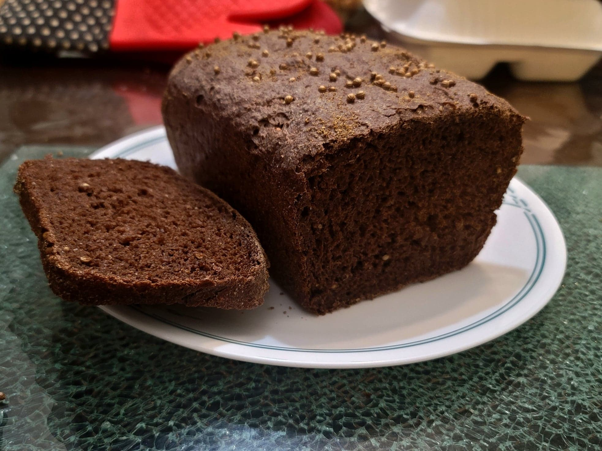

Borodinsky Bread (Russian Black Bread)

Ingredients:
Pre-ferment:
- 90 g Rye sourdough starter, or normal Sourdough starter
- 150 g Water, nonchlorinated, room-temperature
- 120 g Rye flour
Borodinsky Bread:
- All of the Pre-ferment
- 210 g Bread flour
- 60 g Whole wheat flour
- 30 g Rye flour
- 9 g Salt
- 3 g Ground caraway seeds
- 5 g Whole coriander seeds
- 36 g Molasses
- 40 g Rye malt powder OR Dark chocolate powder
- 268 g Water, nonchlorinated, room-temperature
Topping:
- Semolina flour, for dusting
- 3 g Ground caraway seeds, or to taste
- 2 g Coriander seeds, or to taste
Instructions:
- The night prior, mix together the pre-ferment ingredients in a large, loosely-sealed container. Let ferment overnight for 8-12 hours, or until at its peak.
- Once the pre-ferment is at its peak, add all of the bread ingredients into a large mixing bowl and mix with a spatula until very well-combined, about 3 minutes of mixing. Then oil your hands and perform stretch and folds for 2-3 or more rotations around the bowl. Cover and let rest in a warm place for 1 hour, ideally 78 degrees Fahrenheit.
- After an hour, oil hands again and perform stretch and folds once more. Cover and let rest for 3 more hours in a warm place.
- Meanwhile, prepare a 9x5 inch loaf pan. Spray with oil, line with parchment paper, and then spray with oil again. Then sprinkle some semolina flour and half of ground caraway seeds and coriander seeds for topping.
- Transfer the dough onto an oiled work surface. With oiled hands, shape the dough into a round perform a few slap and folds. Shape into a round again and then cover with oiled plastic wrap. Let rest for 15 minutes.
- After 15 minutes, shape the dough into a batard to fit the loaf pan. Transfer to the loaf pan and tap gently with your hands to get it to fill out the pan. Sprinkle with the rest of the ground caraway seeds and coriander seeds for topping and gently tap them into the surface of the dough. Loosely cover the loaf pan and let proof for 45-90 minutes, or until it rises just above the lip of the pan. Keep a close eye on it as it can proof very quickly.
- Meanwhile, place a cast iron pan into the bottom rack of an oven and preheat it to 425 degrees Fahrenheit.
- When ready to bake, place the loaf pan into the top rack of the oven. Then pour 1-2 cups of boiling water into the cast iron pan and immediately close the oven door.
- Bake for 20 minutes at 425 degrees Fahrenheit. Then reduce to 350 degrees Fahrenheit and bake for another 10 minutes. Then remove from the loaf pan and bake the loaf upside down on a baking sheet for 5 more minutes to dry out the bottom. It is done when the internal temperature reads at least 194 degrees Fahrenheit.
- Remove from the oven and transfer to a cooling rack. Let cool completely before slicing and serving.